6. 클러스터 (Cluster)#
클러스터(Cluster)는 여러 대의 서버를 하나로 묶어 단일 시스템처럼 통합 관리하고 가용성을 극대화하는 환경입니다.
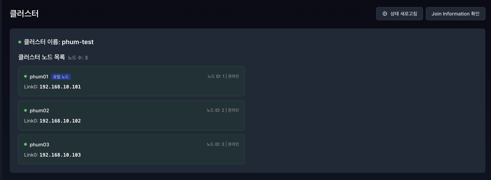
6.1 클러스터 현황#
클러스터 이름 및 구성 노드 목록을 확인합니다.
각 노드의 ID, 온라인 상태, IP 주소(LINK) 를 확인 할 수 있습니다.
6.2 노드 관리#
클러스터의 조인 정보 확인 (Join Information) 및 클러스터 생성/조인을 합니다.
6.2.1 클러스터가 구성이 안되어 있을 때#
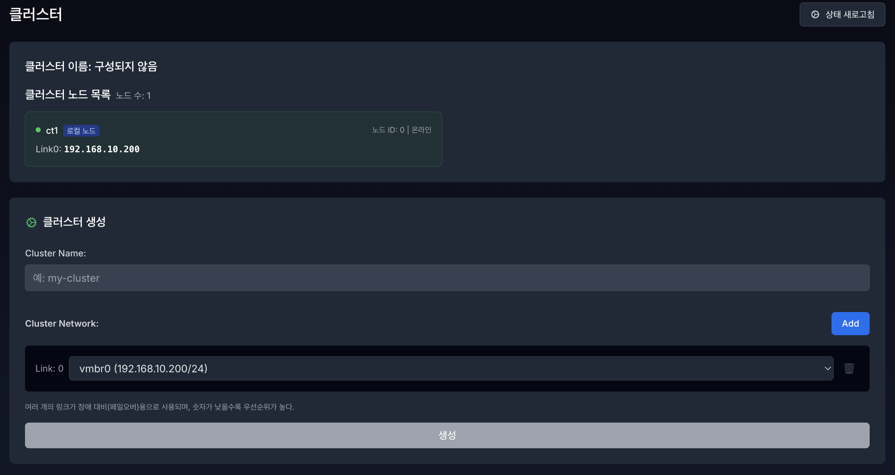
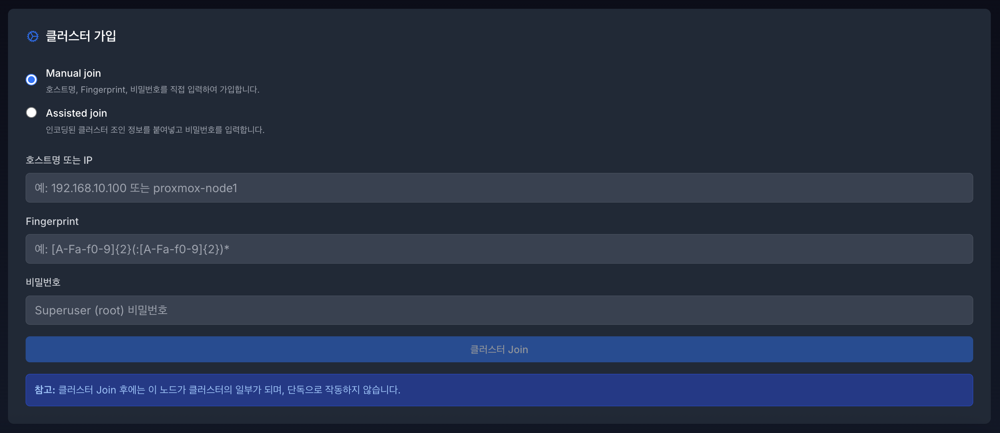
클러스터 구성이 안되어 있으면 클러스터 생성 섹션과 클러스터 가입 섹션이 표시됩니다.
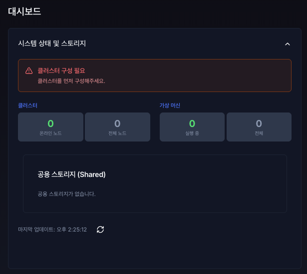
클러스터 구성이 안되어 있을 때 대시보드에 클러스터 구성 필요 메시지와 함께 조회가 불가능합니다.
6.2.2 클러스터 생성#
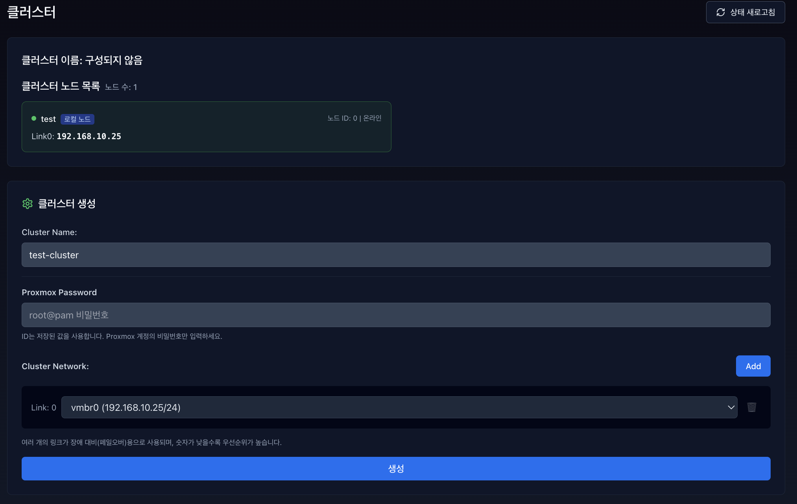
클러스터 이름: 클러스터의 이름을 입력하며, 한글 입력은 제한됩니다.
Proxmox Password : 프록스목스 계정의 비밀번호를 입력합니다.
클러스터 네트워크: 현재 서버의 기본 네트워크가 자동으로 할당되며, 추가 할 수 있습니다.
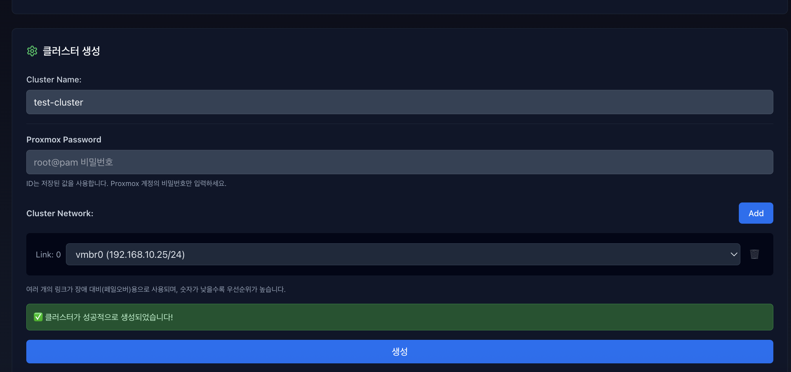
클러스터 생성 후 새로고침 하면 클러스터 구성 상태로 변경됩니다.
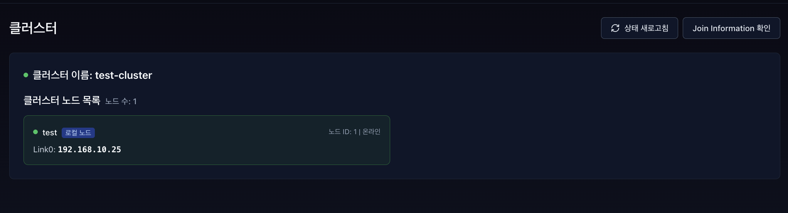
6.2.3 클러스터 조인#
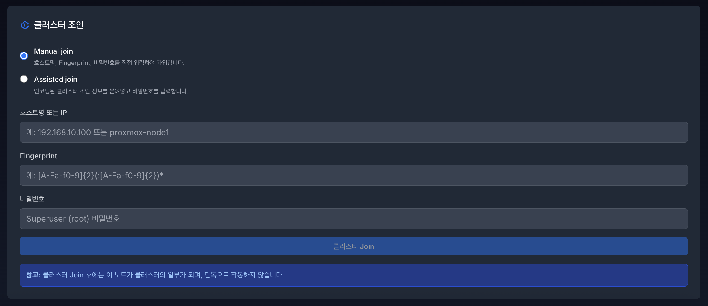
Manual Join: 수동으로 클러스터의 정보를 입력하여 Join을 진행합니다.
Assisted Join: 복사한 Join Information 정보를 붙여 넣으면 조인할 클러스터 정보(Peer Cluster)가 자동으로 할당 됩니다.
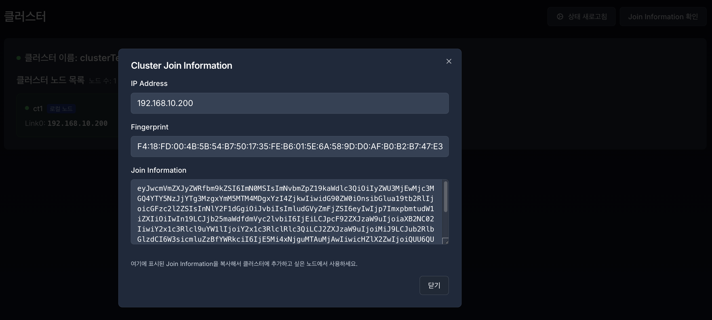
우측 상단의 Join Information 확인 버튼을 통해 생성된 클러스터의 정보를 확인 및 복사합니다.
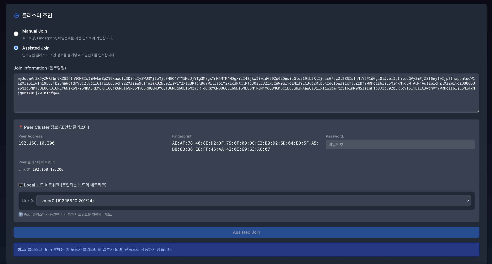
Join Information을 복사하고 조인되는 클러스터에 접속 후 Join 정보를 입력합니다.
조인할 클러스터 정보(Peer Cluster) 와 조인되는 네트워크(현재 서버) 가 자동으로 할당 됩니다.
Password 입력 후 Assisted Join 버튼을 누르고 새로고침 하면 클러스터가 구성된걸 확인할 수 있습니다
⚠️ 참고
클러스터 생성 시 네트워크를 추가 했다면,
조인되는 노드의 네트워크도 Peer 클러스터와 동일한 수의 네트워크를 추가 해야 합니다.
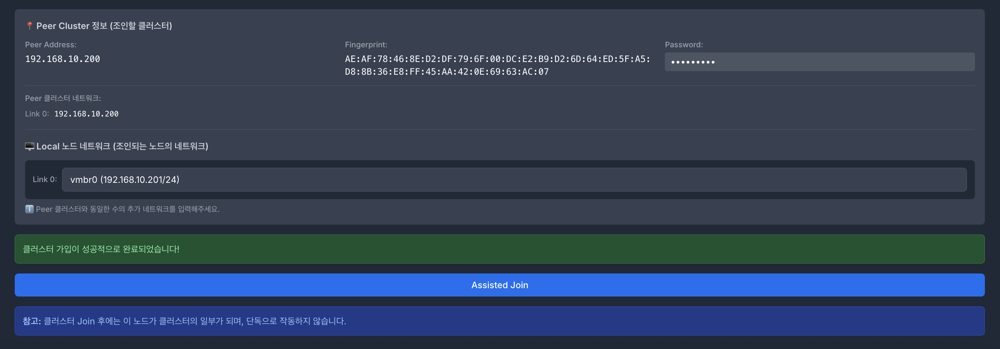
비밀번호 입력 후 Join이 완료되면 성공 및 실패 알림이 표시됩니다.
새로고침 후 클러스터 구성 상태를 확인 하실 수 있습니다.
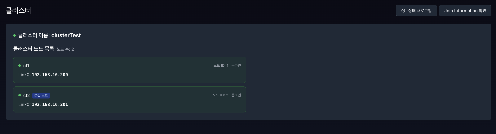
현재 접속 중인 서버는 로컬 노드 로 표시됩니다.